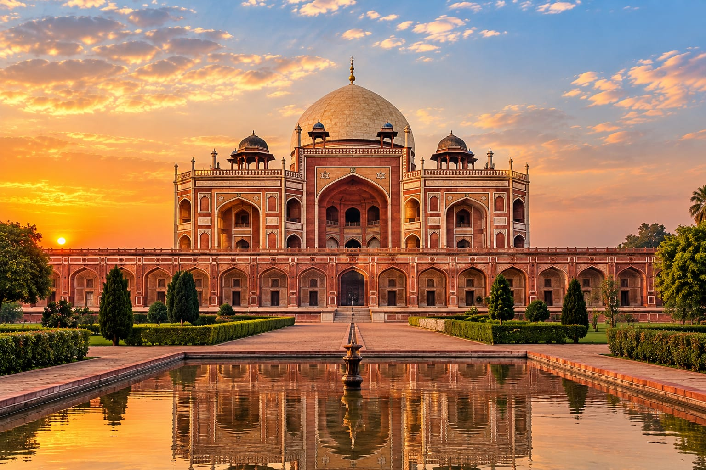

GRANADA, SPAIN
01. The Alhambra
13th–14th Century
History and Origins
The Alhambra is one of the most celebrated examples of Islamic palace architecture. Located on a hill overlooking Granada in southern Spain, it became an important royal residence during the Nasrid dynasty, the last Muslim dynasty to rule Granada.
Its development began under Muhammad I ibn Nasr in the 13th century. Later Nasrid rulers expanded and decorated the palace complex, especially during the 14th century. The Alhambra served as a royal residence, a political center, and a fortified city.
Its interiors are famous for intricate geometric patterns, Arabic inscriptions, carved stucco, colorful tiles, peaceful courtyards, and elegant fountains. The Court of the Lions is among its most famous spaces. After Granada was conquered by the Catholic Monarchs in 1492, parts of the complex were adapted for new royal uses.
Who Built It and Why?
Muhammad I established the Nasrid royal complex, and later rulers developed it over generations. It was built to serve as a fortified royal residence and the administrative heart of the Nasrid kingdom.
Interesting Facts About the Alhambra
01. A Palace and Fortress
The Alhambra combined royal living spaces, defensive walls, administrative buildings, and gardens within one remarkable complex.
02. The Court of the Lions
This famous courtyard features a central fountain supported by twelve marble lions and is surrounded by delicate architectural details.
03. Poetry on the Walls
Arabic inscriptions, including poetry and religious phrases, decorate many walls, turning architectural surfaces into works of literature and art.
04. A UNESCO World Heritage Site
The Alhambra was included on UNESCO's World Heritage List in 1984, recognizing its exceptional historical and cultural importance.

JERUSALEM, PALESTINE
02. Dome of the Rock
Completed around 691–692 CE
History and Origins
The Dome of the Rock stands on the Haram al-Sharif, also known to Jews as the Temple Mount, in the historic city of Jerusalem. It is one of the earliest surviving monumental buildings of Islamic architecture and holds profound religious significance.
The monument was commissioned by the Umayyad Caliph Abd al-Malik ibn Marwan and completed around 691–692 CE. Its central structure was designed around a sacred rock, beneath its magnificent dome.
The building combines a distinctive octagonal plan, a large dome, elaborate mosaics, and decorative inscriptions. Its artistic design reflects the development of early Islamic architecture and the exchange of artistic traditions in the region.
Who Built It and Why?
Umayyad Caliph Abd al-Malik commissioned the building. It was created as a monumental Islamic sanctuary and a statement of the growing artistic, religious, and political presence of the Umayyad state in Jerusalem.
Historical Importance
The Dome of the Rock remains a major landmark within one of the world's most religiously significant locations. Its history reflects centuries of worship, architectural development, restoration, and cultural change.
Interesting Facts About the Dome of the Rock
01. An Early Islamic Monument
Completed in the late seventh century, it is among the oldest surviving monumental examples of Islamic architecture.
02. The Golden Dome
Its striking dome dominates the Jerusalem skyline. The dome's external appearance has changed through restoration and different periods of maintenance.
03. Beautiful Mosaics
Rich mosaics and decorative inscriptions demonstrate the sophistication of early Islamic artistic traditions.
04. A Sacred Location
The sanctuary is located within the Haram al-Sharif compound, a site of exceptional religious importance to Muslims and a location sacred to Jews and Christians through its wider history.

LAHORE, PAKISTAN
03. Lahore Fort
Major Mughal development from the 16th century
History and Origins
Lahore Fort, also known as Shahi Qila, is a historic fortified complex in the heart of Lahore. Although the area has a much older history, the fort's major surviving Mughal structures developed through the work of several emperors.
Mughal Emperor Akbar rebuilt and strengthened the fort around 1566, transforming it into an important imperial stronghold. Later rulers, particularly Jahangir and Shah Jahan, added palaces, halls, gardens, and richly decorated buildings.
Among its best-known features are the Sheesh Mahal, the Alamgiri Gate, and the Naulakha Pavilion. The fort reflects a blend of military planning, royal life, decorative arts, and changing architectural styles across different Mughal reigns.
Who Built It and Why?
The fort was developed over many centuries. Akbar carried out a major reconstruction, while later Mughal emperors expanded its royal buildings. Its purposes included protecting the city, housing the imperial court, and demonstrating Mughal power.
Historical Importance
Lahore Fort preserves evidence of the Mughal Empire's political and artistic achievements. Together with Lahore's Shalimar Gardens, it was inscribed on UNESCO's World Heritage List in 1981.
Interesting Facts About Lahore Fort
01. A Royal Stronghold
The fort served as a defensive structure and an imperial residence, linking military needs with the everyday life of the Mughal court.
02. The Sheesh Mahal
Meaning Palace of Mirrors, this famous hall is decorated with reflective mirrorwork and delicate ornamentation.
03. Mughal Architecture
Its buildings combine decorative marble, frescoes, carved stone, and architectural forms developed across successive Mughal reigns.
04. UNESCO Recognition
Lahore Fort and Shalimar Gardens were jointly recognized as a UNESCO World Heritage Site in 1981.

DELHI, INDIA
04. Humayun's Tomb
Constructed approximately 1565–1572
History and Origins
Humayun's Tomb is a magnificent Mughal mausoleum located in Delhi, India. It was commissioned by Hamida Banu Begum, also known as Haji Begum, in memory of her husband, the Mughal Emperor Humayun, who died in 1556.
Construction began around 1565 and was completed around 1572. The project is traditionally associated with the Persian architect Mirak Mirza Ghiyas and his son Sayyid Muhammad. Its design introduced important features that became influential in later Mughal architecture.
The tomb stands on a raised platform and combines red sandstone with white marble. Its double dome, symmetrical layout, arched entrances, and formal gardens reflect Persian influences adapted to the Indian subcontinent.
Who Built It and Why?
Haji Begum commissioned the mausoleum to honor Emperor Humayun. Its architects helped shape the monumental design. The tomb was intended as a royal burial place and a lasting memorial to the emperor.
Historical Importance
The monument is widely regarded as an important predecessor to later Mughal garden-tombs, including the Taj Mahal. It demonstrates how Persian architectural influences contributed to the development of Mughal architecture in India.
Interesting Facts About Humayun's Tomb
01. A Royal Memorial
The tomb was commissioned by Humayun's widow, Haji Begum, to commemorate the emperor after his death in 1556.
02. Persian Influences
Its garden layout, symmetry, arches, and monumental dome reflect Persian traditions adapted by Mughal builders.
03. A Garden Tomb
The mausoleum sits within a formal garden divided into pathways and water channels, creating an organized and peaceful setting.
04. UNESCO World Heritage
Humayun's Tomb was inscribed on the UNESCO World Heritage List in 1993 for its outstanding architectural and historical significance.

SAMARKAND, UZBEKISTAN
05. Registan Square
15th–17th Century
History and Origins
Registan Square is one of the most famous historical landmarks of Samarkand, Uzbekistan. It was an important public square along the Silk Road, where merchants, scholars, travelers, and local people gathered. The word "Registan" is commonly translated as "sandy place" or "desert place."
Samarkand became a major center of trade, science, education, and culture during the Timurid period. Under Timur and his successors, the city developed into one of the most influential cultural centers of Central Asia. Registan Square became especially important during the 15th and 17th centuries.
The square is surrounded by three magnificent madrasas: Ulugh Beg Madrasa, Sher-Dor Madrasa, and Tilya-Kori Madrasa. Their enormous entrance portals, blue tiled domes, geometric patterns, colorful mosaics, and decorative calligraphy demonstrate the artistic achievements of Central Asian Islamic architecture.
Who Built It and Why?
Registan Square developed over several centuries. Ulugh Beg, the Timurid ruler and scholar, commissioned the first major madrasa around 1417–1420. Sher-Dor Madrasa was built under the patronage of Yalangtush Bahadur between 1619 and 1636, while Tilya-Kori Madrasa was constructed between 1646 and 1660.
These buildings were designed to support religious education, scholarship, public gatherings, and commercial life. Together, they transformed the square into a remarkable center of learning and civic activity.
Architectural Design
Registan Square is celebrated for its monumental Islamic architecture. The three madrasas feature symmetrical courtyards, towering iwans, elaborate tilework, and richly decorated facades. Blue, turquoise, and gold-colored details create a distinctive appearance that has become closely associated with Samarkand.
The interiors contain intricate geometric designs, floral ornamentation, and decorative inscriptions. The combination of grand proportions and detailed craftsmanship demonstrates the sophistication of Timurid and later Central Asian architectural traditions.
Historical Importance
Registan Square reflects Samarkand's importance as a center of learning, trade, and cultural exchange along the Silk Road. Its madrasas preserve evidence of the region's educational traditions and the architectural achievements of successive rulers.
Today, Registan Square is one of Uzbekistan's most recognizable historical sites. It forms part of the historic city of Samarkand, which was inscribed on UNESCO's World Heritage List in 2001.
Interesting Facts About Registan Square
01. Three Grand Madrasas
The square is surrounded by Ulugh Beg, Sher-Dor, and Tilya-Kori madrasas, each representing a different stage in Samarkand's architectural history.
02. A Center of Learning
Ulugh Beg Madrasa was an important educational institution where students studied subjects including mathematics, astronomy, and religious sciences.
03. Stunning Blue Tilework
The buildings are famous for their turquoise and blue tiles, geometric patterns, floral designs, and elaborate Islamic decorative art.
04. UNESCO World Heritage
Registan Square is part of the historic city of Samarkand, which received UNESCO World Heritage recognition in 2001 for its outstanding cultural significance.